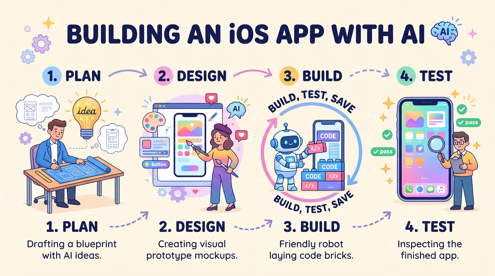

The Crucible Of Effort
These four slides are in order. Start with the tutoring gap. End with plan, design, build, and test.
- Bloom's 2 Sigma Problem
- The Crucible of Effort
- The 7-Step Workflow
- Plan, Design, Build, Test
1. Bloom's 2 Sigma Problem
 One-on-one coaching lifts students about two grades. The problem is how to offer that to everyone.
One-on-one coaching lifts students about two grades. The problem is how to offer that to everyone.
2. The Crucible of Effort
 Effort is the workout. AI should add resistance, not remove it.
Effort is the workout. AI should add resistance, not remove it.
3. The 7-Step Workflow
 Turn one big idea into a seven-step playbook with AI.
Turn one big idea into a seven-step playbook with AI.
4. Plan, Design, Build, Test

Plan the blueprint, design the screens, build the code, then test the app.
© 2026 Bulldog Ventures Inc. All rights reserved.